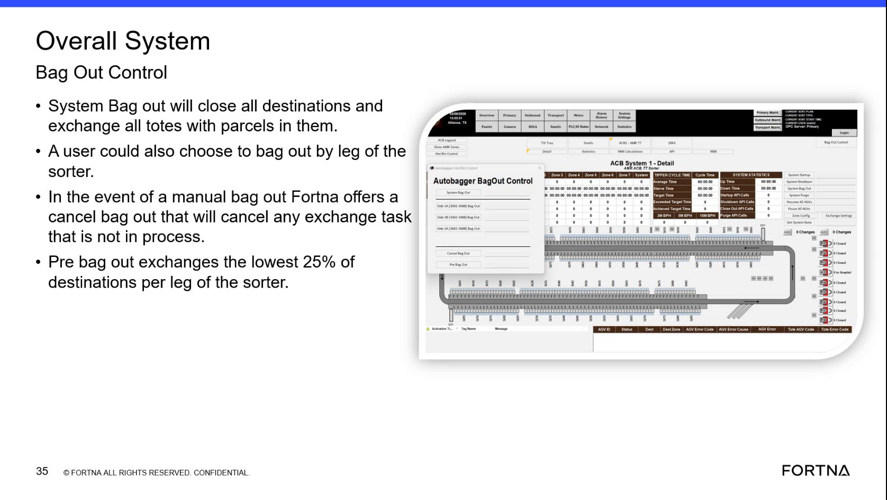

| Procedure ID | proc_cancel_manual_bag_out_cancel_exchange_not_in_process_v1 |
|---|---|
| Title | Cancel Manual Bag Out (cancel exchange tasks not in process) |
| Procedure Type | recovery |
| Primary Role | operator |
| Support Safe | Yes |
| Capability Tags | bag_out_or_closeout_state |
| Access Surface | aveva_hmi |
| Audience Roles | operator |
| Failure Pattern Tags | None |
| Validation Status | needs_sme_review |
| Merge Status | source_finalized |
When a manual bag out is initiated, cancel the bag out for exchange tasks that are not already in process, while ensuring any exchange already in process still completes.
Use when a manual bag out has been initiated and you need to cancel the bag out effect for exchange tasks that are not already in process, while allowing in-process exchanges to finish.

Responsible role: operator
Instruction:
On the AVEVA HMI (Overall System view), navigate to the bag out controls area where the “cancel bag out” option is available.
Expected result:
The AVEVA HMI bag out controls are visible, including the “cancel bag out” option.
Responsible role: operator
Instruction:
In the AVEVA HMI bag out controls, confirm the current bag out action is a manual bag out (not a system bag out).
Expected result:
You can identify that the active bag out is manual, so “cancel bag out” applies to exchange tasks not in process.
Stop or Escalate If:
Responsible role: operator
Instruction:
On the AVEVA HMI bag out controls, click/select “cancel bag out”.
Expected result:
The “cancel bag out” action is executed from the AVEVA HMI controls.
Stop or Escalate If:
Responsible role: operator
Instruction:
After clicking “cancel bag out,” verify that exchange tasks/chests that are NOT in process are canceled in the AVEVA HMI bag out/exchange status area.
Expected result:
Exchange tasks/chests that were not in process are canceled.
Stop or Escalate If:
Responsible role: operator
Instruction:
After clicking “cancel bag out,” verify that any exchange task that is already in process continues and completes.
Expected result:
Exchange tasks already in process continue and reach completion after cancel bag out.
Stop or Escalate If: